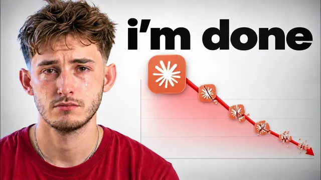

클로드 코드 구독을 끊은 이유

원본 영상 보기 →
- 락인은 계약서가 아니라 "편의"로 완성돼요
- 정액제 요금은 실제 사용량에 대한 감각을 지웁니다
- 탈락인은 "대체 도구 하나 찾기"가 아니라 "역할별로 모델을 쪼개는 구조 설계"예요
한 줄 요약
Claude에 연 3억 토큰, 10만 달러 넘게 쓴 파워유저가 지난주 자신의 200달러 플랜을 해지했어요. 그 이유와, Claude 하나에 걸었던 업무를 6개 모델·4개 실행 도구로 쪼갠 대체 구조를 그대로 공개합니다.
전체 내용 정리
상위 0.01% 파워유저가 플랜을 해지했어요
이 채널 운영자는 올해 구독료와 API 비용을 합쳐 Claude에만 만 달러 넘게 썼고, 지난달 한 달에만 3억 토큰 넘게 사용한 상위 0.01% 파워유저였습니다. 본인이 운영하는 세 개 사업 전부가 Claude 위에서 돌아갔고, 최근 유튜브 영상 30개 중 20개가 Claude 관련 내용이었을 정도예요.
그런 그가 지난주 처음으로 200달러 플랜을 해지했습니다.
계기는 한 가지 생각이 계속 머릿속을 맴돌았기 때문이에요. 자신이 Claude 하나에 너무 깊이 의존하고 있다는 불안이요.
그 불안이 시작된 시점도 명확합니다. Fable이 출시됐을 때 일주일 만에 클라이언트 시스템, 팀 세팅, 개인 비서까지 전부 Fable로 옮겼는데, 이후 정부 개입으로 Fable이 전체 이용자에게서 한꺼번에 서비스 중단됐던 사건이요.
팀이 그 위에 쌓아 올린 작업을 그대로 둔 채, 언제 복구될지도 모르는 상황에서 손 놓고 기다려야 했던 경험이 "설정 하나가 바뀌면", "가격이 오르면" 같은 질문들을 계속 떠오르게 만들었다고 해요.
200달러 정액제는 계산을 멈추게 만들어요
운영자가 처음 이 문제를 들여다보게 된 건 결국 돈 때문이었습니다.
지난달 사용한 3억 토큰을 Anthropic이 공개한 API 요금표 그대로 계산하면 만 달러를 훌쩍 넘깁니다. 하지만 본인은 200달러 정액 플랜이라 그 200달러만 냈어요.
그는 이 차이를 두고 공개 요금표 자체가 실제 원가와 다르거나, 누군가 그 격차를 메워가며 사람들을 자사 플랫폼에 묶어 두고 있는 것이라고 봅니다.
문제는 이 요금이 나쁘다는 게 아니라, 이 가격이 "질문 자체를 멈추게" 만든다는 점이에요. 그냥 열고, 쓰고, 매주 한도를 다 채우고, 리셋을 기다리는 게 습관이 됐습니다.
실제로 그는 이 도구를 클라이언트 사이트, 랜딩페이지, 재무 리포트, 인스타그램 자동화, 광고 캠페인, 아웃리치 리스트, 영상 리서치, 팀의 DM 응대까지 회사의 거의 모든 업무에 썼어요. 이렇게 만든 빌드와 마케팅 캠페인에서 나온 수익이 대략 30만~40만 달러에 달했다고 밝힙니다.
락인을 완성한 건 개인 비서였어요
비용보다 더 그를 붙잡아 둔 게 따로 있었습니다.
맥북 안에 폴더 하나를 만들어 개인 비서를 구축했는데, 이메일·캘린더·ClickUp·CRM·Telegram까지 접근 권한을 주고 하루를 굴리는 루틴 세트를 맡겼어요. 아침 브리핑, 통화 전 준비, 초안 작성까지 이 비서가 대신했습니다.
평소 다른 도구를 고민하기도 전에 반사적으로 Claude부터 켰던 이유가 바로 이 비서였다고 그는 말해요.
루틴을 하나씩 추가하고 스킬을 하나씩 가르칠 때마다 비서는 더 유용해졌고, 동시에 떠나기는 더 어려워졌습니다. 편리함이 하나씩 쌓이는 동안 본인이 의도적으로 선택한 적은 한 번도 없었는데, 막상 돌아보니 다른 벤더로 옮기는 일이 엄청난 수고가 되어 있었다는 거예요.
그는 이게 사악한 전략이 아니라 그냥 잘 만든 비즈니스일 뿐이며, 지금 이 영상을 보는 사람에게도 똑같이 작동하고 있을 거라고 짚습니다.
하나의 대체 도구 대신 역할별로 쪼갰어요
해지 후 그는 처음에 "Claude를 대체할 단일 도구가 뭔가"를 찾았습니다. 그런데 코딩·기획·관리·민감 파일 처리는 애초에 서로 다른 네 가지 업무이므로 한 회사가 전부를 담당할 이유가 없다는 결론에 도달했어요.
지금 쓰는 조합은 이렇습니다.
| 모델 | 역할 | |---|---| | Fable | 여전히 가장 능력 있는 모델로 보고 기획과 리뷰만 (타이핑이나 실행은 안 함) | | GLM 5.2 | 코딩과 글쓰기의 대부분. 훨씬 저렴하고 하루 작업 대부분에 충분 | | Kimi K3 | 두 번째 플래너. Fable과 다른 방식으로 문제를 읽게 해서 "계획 두 개가 하나보다 낫다" | | DeepSeek V4 | 이름 바꾸기·요약·정렬 같은 단순 작업을 거의 무료로 | | Qwen (로컬) | 클라이언트·민감 정보 관련 작업. 외부로 나가지 않게 맥북에 로컬로 |
클라우드 모델은 OpenRouter 키 하나로 거의 모든 모델에 접근하고, 로컬 모델은 LM Studio나 Ollama로 돌립니다. 필요하면 감당할 만한 사양의 컴퓨터나 Hostinger 같은 VPS에 올릴 수도 있고요.
실행 도구도 나누고, 규칙 파일 한 장으로 묶어요
모델(두뇌)과 별개로 실행 도구(몸)도 역할을 나눴습니다.
- Claude Code — 책상 앞에서 깊은 작업을 할 때. 폴더가 메모리 역할을 해요
- Codex — 엔지니어 역할. 메타 광고 세팅처럼 반복 업무를 스킬 파일로 한 번만 가르쳐 두면 이후엔 명령만으로 실행하고, API가 없는 곳에서는 브라우저를 직접 조작합니다
- Grokbot — 각자 역할을 가진 봇들이 클라우드 안에서 서로 업무를 넘기며 노트북을 꺼도 계속 돌아가요. CRM 확인, 예약 리포트 검토, 인스타 DM 응대, 이메일 응대 같은 상시 프런트 데스크 역할입니다
- 개인 비서 — 반대로 완전히 로컬에만 머물며 클라이언트 파일·재무·계약서·통화 녹취를 절대 밖으로 내보내지 않아요
비용을 아끼고 싶다면 오픈소스 실행 도구인 OpenCode로 아무 모델이나 붙여 쓸 수도 있습니다.
이 모든 걸 묶는 건 규칙 파일 한 장이에요. 구성은 이렇습니다.
- 폴더 소유자가 매니저이고 절대 직접 실행하지 않는다는 한 줄
- 스태프 목록 — Fable=기획/리뷰, GPT 5.6=빌드, 어려운 빌드는 GPT-6 Astra, GLM 5.2=대량 작성, Kimi K3=고액 작업 2차 검증, DeepSeek V4=단순 작업, Qwen=민감 정보 로컬 처리
- 하단 규칙 — 클라이언트 데이터는 예외 없이 로컬 처리, 단순 작업은 플래너를 거치지 않음, 리뷰 실패 시 한 단계 위로 올리고 두 번 실패하면 본인에게 확인
- 결과물마다 누가 처리했는지 표시되는 감사 로그
효과를 직접 검증했어요. 같은 작업을 빈 폴더와 이 규칙 파일이 있는 폴더에서 각각 돌려 비교해 보니, 빈 폴더 쪽은 의도를 매번 추측해야 해서 토큰을 몇 배나 더 쓰고 그마저도 가장 비싼 모델로 추측하더랍니다.
지금 실제로 내는 돈은 ChatGPT 플랜, Grokbot 자체 플랜, Claude 20달러 플랜 + Fable 크레딧, OpenRouter 계정(사용량 과금), 그리고 비용이 전혀 들지 않는 로컬 Qwen입니다.
본인 Claude를 새로 만들려는 게 아니라 같은 결과를 같은 돈이나 그 이하로 내는 게 목표이며, 아직 검증 중인 실험이라 몇 주에 걸쳐 결과를 계속 공유하겠다고 밝혀요.
핵심 메시지는 하나입니다. 단일 벤더에 묶이지 마세요. 클라우드 제공사를 최소 두 곳 쓰거나, 로컬 모델이나 VPS를 하나라도 끼워 넣어 보안과 대체 가능성을 함께 확보하라는 거예요.
핵심 인사이트
- 락인은 계약서가 아니라 "편의"로 완성돼요: 이 운영자를 실제로 묶어 둔 건 요금제가 아니라 이메일·캘린더·CRM까지 손댄 개인 비서였습니다. 자동화를 도구 하나에 깊이 태울수록 전환 비용은 매달 눈에 띄지 않게 쌓여요. 지금 내 워크플로우 중 옮기기 가장 무서운 자동화가 뭔지 점검해 볼 가치가 있습니다.
- 정액제 요금은 실제 사용량에 대한 감각을 지웁니다: 200달러를 내고 실사용 기준 만 달러어치를 쓰고 있었다는 사실보다, "그 가격이 질문을 멈추게 만들었다"는 점이 더 중요해요. 정액제에 익숙해질수록 내가 얼마나 의존하고 있는지, 대안은 뭔지 따져보는 습관이 먼저 사라집니다.
- 탈락인은 "대체 도구 하나 찾기"가 아니라 "역할별로 모델을 쪼개는 구조 설계"예요: 코딩·기획·단순작업·민감정보 처리를 애초에 다른 업무로 보고 각각 다른 모델에 맡긴 뒤, 규칙 파일 한 줄로 교체 가능하게 만든 게 핵심입니다. 이 구조 덕분에 특정 모델이 막혀도 사업 전체가 멈추지 않아요.
오늘 당장 해볼 것
- 지금 가장 많이 쓰는 AI 툴이나 자동화 하나를 정해 "내일 이게 막히면 내 업무 중 뭐가 바로 멈추는가"를 실제로 적어 보세요. 리스트가 길수록 그 도구에 대한 의존도가 높다는 신호입니다.
- OpenRouter에 계정을 하나 만들어 지금 쓰는 유료 모델과 비슷한 급의 다른 모델로 평소 하던 작업 하나를 그대로 시켜 보고 결과와 비용을 비교해 보세요.
- 클라이언트 정보나 계약서, 통화 내용처럼 민감한 자료를 다루는 작업이 있다면, 그중 하나만이라도 로컬 모델로 처리하는 걸 이번 주에 테스트해 보세요.